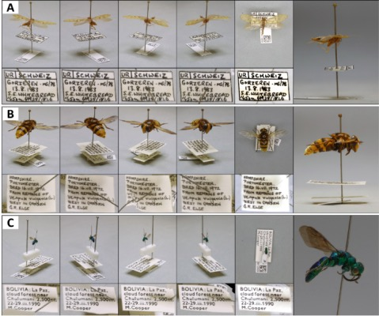
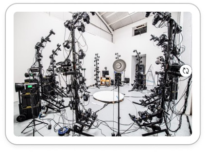
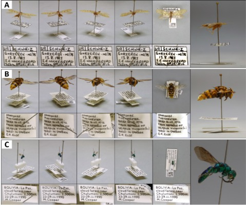
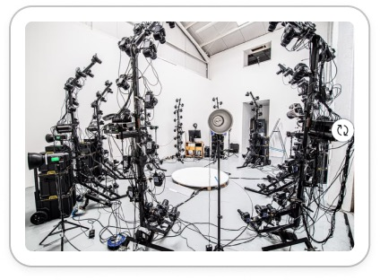

Our AI-powered digitisation solution delivers global access, research breakthroughs, and long-term value for every collection.
Benefits?
üîç Discoverable by Design
Make every object searchable and accessible with AI-powered metadata and visualization.
üåç Access for All
Democratise heritage through digital access for researchers, communities, and the next generation.
üߨ Science Without Borders
Boost taxonomic research and protect collections by reducing handling with deep learning insights.
Invest in Digital Permanence, Not Physical Risk.
Why We're the Right Partner
| Feature | üí¨ Why It's Better |
|---|---|
| AI-powered metadata tagging | Saves time + boosts accuracy compared to manual processes |
| Long-term, vendor-agnostic storage | No vendor lock-in; compatible with multiple cloud systems |
| Modular, scalable design | Grows with your collections - future-proof investment |
| Ethical AI use, explainability | Transparent decision-making in classification |
| Research-backed effectiveness | Based on 4+ recent studies validating digitisation benefits |
Backed by Research
| üìù Paper | üí¨ Why It's Better |
|---|---|
| Robillard et al., 2023 | AI reduces errors and improves dataset usability |
| Lendemer et al., 2020 | Digitised data improves conservation efforts |
| Hedrick et al., 2020 | Open access boosts collaboration across continents |